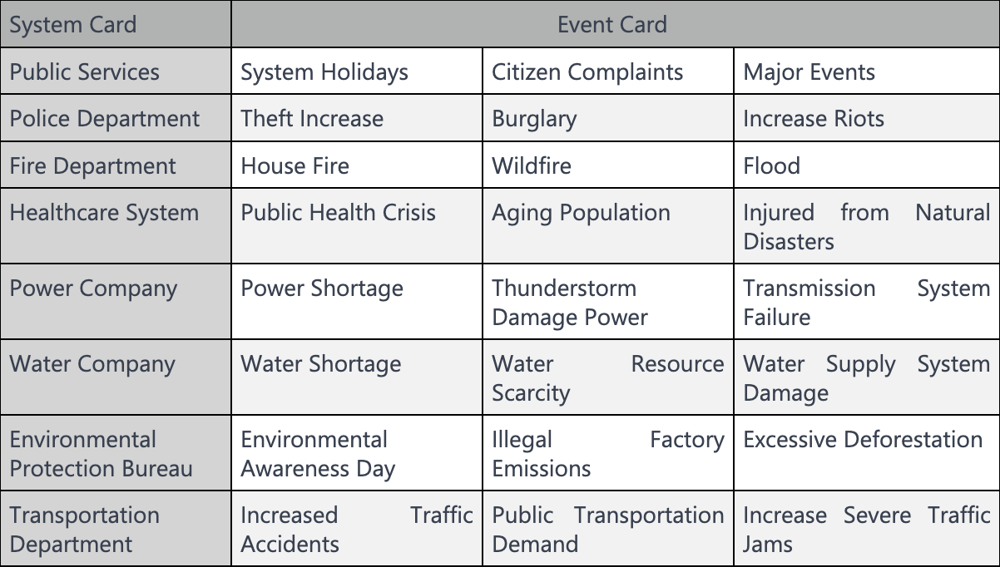

The host needs to summarize the situation of the game and create some case studies for discussion.
- Initial players start with a city wealth of 2 million. The host randomly distributes 8 cards to each player from a total of 44 cards (8 system cards, 5 of each type, and 4 council cards).
- Having the same system cards means that the system has a higher ability level to address the corresponding problems, with a maximum level of five.
- After the random distribution of cards, players have their own system cards to build their city systems.
- After the first round of card distribution, players can exchange cards with each other in seat order to prepare their cities for unpredictable events.
- At the end of each round, players have one more opportunity to exchange cards with each other or purchase a card from the host using city wealth (1 million per card).
- Then, players randomly draw two event cards from the host's hand. They use system cards, bill cards, and council cards to solve the drawn problems.
- If a player fails to solve a problem, they must discard one card from their hand and lose 1 million in city wealth.If a player successfully solves a problem, they gain 1 million in city wealth.
- If a player's city wealth reaches zero, the game is lost. After six rounds, the winner is determined based on the amount of city wealth in hand. After eliminating a player, the remaining players need to draw an additional problem card in the next round.
Card Type Explanation
System Cards
Bill Cards
Council Cards
Event Cards
- System Cards: Transportation Department, Police Department, Healthcare System, Fire Department, Power Company, Water Company, Environmental Protection Bureau, Government Services.
- Bill Cards: If a player cannot solve a problem without system support, they can propose using a bill card. However, each bill card can only be used once. When using a bill card, players only need to state the name of the bill for it to take effect. No voting is required. Each player starts with 3 bill cards.
- Council Cards: If a player draws a council card, they can propose a motion to use a system card that doesn't correspond to the problem. The feasibility of the motion is determined by a vote from the other three players. There are a total of four council cards, and each can only be used once.
- Event Cards: Event cards are primarily categorized as environmental and social cards. In each round, players randomly draw one environmental card and one social card from the host. The two event cards will require different systems to address. Each system card can only solve one problem. There are a total of 24 event cards.
